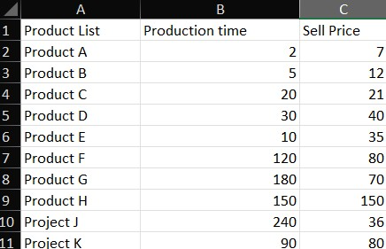
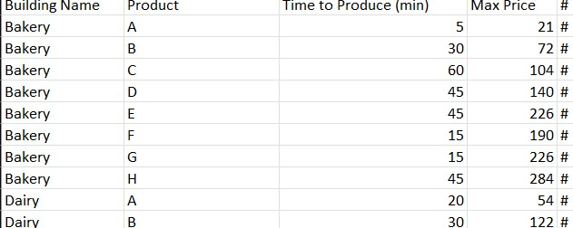
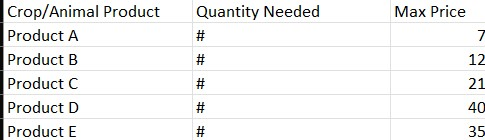

Description
This project provides an in-depth analysis of supply chain disruptions, using data visualization and interactive tools to highlight key issues and propose solutions.
Objectives Completed
- Developed interactive visualizations to represent supply chain data.
- Identified key bottlenecks and inefficiencies in the supply chain.
- Proposed actionable solutions to mitigate disruptions.
Project Images
  Importance of Optimized Solutions
Understanding the importance of generating the most revenue within the available time is crucial in supply chain management. Constraints such as factory hours or the productivity of workers during an 8-hour shift play a significant role in determining efficiency. By analyzing these factors, businesses can make informed predictions and optimize their operations to minimize disruptions and maximize output.
Disclaimer: Actual data cannot be used in this example due to privacy concerns. However, public data sources are readily available and have been utilized to demonstrate the concepts and methodologies applied.